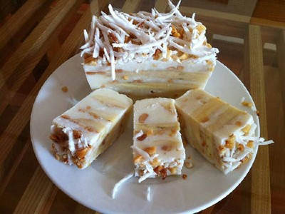

|  |
Food's name: Banana Ice-Cream▸ Ingredients:
▸ Time to prepare: 4 hours 30 minutes ▸ Approx quantity: 5 ice cream |
▸ Detailed recipe:
- Add filtered water, coconut milk, sugar, salt, vanilla, and tapioca flour into a saucepan, stir well, then put on the stove
to simmer, stirring while boiling until the powder boils and thickens, then turn off the heat and let it cool.
- Prepare a glass bag to wrap the ice cream. Tear open one side of the bag.
- Peel a banana and put it in the middle of a plastic bag and then use a large knife to thin it.
- Pour a tablespoon of juice over the banana and sprinkle with roasted peanuts.
- Flip the banana on the other side and do the same, gently squeeze the juice with your hands to spread the juice evenly,
and then fold the excess plastic bag. Do the same until you run out of bananas.
- Put the banana ice cream in the freezer for about 4-5 hours and you can enjoy it.
=> So you've got yourself some delicious ice cream, and now enjoy it !
▸ Calories and related information: